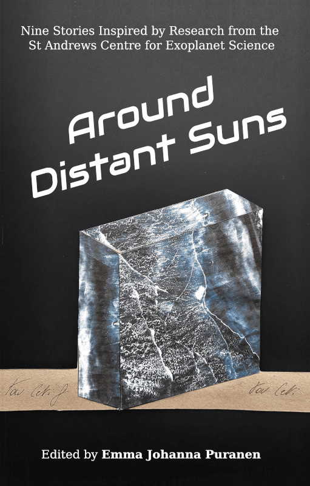
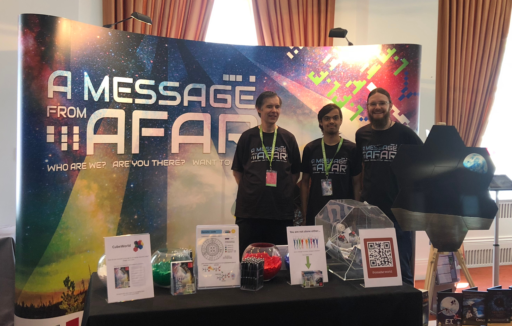

As a postdoctoral scholar at the University of Chicago, I volunteer for the Astronomy Conversations program at the Adler Planetarium. As a volunteer, roughly once a month, I spend 2 hours in the Space Vizualization Lab where I and another expert volunteer are available to answer the publics questions about our research, exhibits in the museum, or about space in general.
Contributor: Steiermarkschau Mobiler Pavillion 2023, "Atmosphären: Kunst, Klima- und Weltraumforschung". February 2023: Interviewed for Period. Magazine: "Mineral Clouds". May 20 2022, Demonstrator: Lange Nacht der Forschung, IWF, Graz
Throughout my PhD I was fortunate to have many opportunities to share my research with the public. The first of two commitments I had were as an assistant/ guide for tours and open days at the University of St Andrews Observatory. This was a great chance to get the public familiar with the practical challenges of astronomy, and the history of the telescopes and observatory at St Andrews. Secondly I was a driver and presenter for the Mobile Planetarium, which is a long standing outreach activity run by PhD students in the School of Physics and Astronomy. We exhibited the planetarium mostly to primary and secondary schools to show children what they can see in the night sky themselves, but we also engaged with homeless charities and other adult audiences as well.
Throughout the summer of 2020 I participated in a project run by Emma Puranen, through the St Andrews Centre for Exoplanet Science, which culminated in the publishing of the anthology 'Around Distant Suns'. The project paired scientist with writers at the University of St Andrews the aim of exploring, through an anthology of short-stories and other literary forms, the topics for research undertaken by the Centre. I worked with poet and author Colin Bramwell on the short-story 'The Stripped Core', the story covers the journey of a protagonist on a cryo-ship towards a distant exoplanet which is in the process of losing its atmosphere through intense radiation. But more broadly Colin and I aimed to provide a story which could inspire the reader and providing numerous jumping of points to explore the science more deeply, rather than explaining it all in the story.
The Anthology is currently available for purchase in the UK from Guardbridge Books. There was also an online event in ascociation with the Byre Theatre on September 29th 2021: Byre World: Around Distant Suns.
The below piece (full audio-visual here) was composed by Sonia Killmann based on my research into cloud formation on ultra-hot Jupiters (tidally-locked, Jupiter-mass exoplanets orbiting close to their host star). The clouds formed are made of the same minerals that make up rubies and sapphires; diamonds; and quartz and may also form intricately shaped particles, hence 'Mineral Snowflakes'. The idea of the piece is that it forms a tour around one of these exoplanets, starting on the cloud forming 'night-side' (facing away from the star) and moves round to the ultra-hot, cloud-free 'day-side' (facing the star).
This piece was produced for 'Intersections', a concert of new music created in collaboration between researchers at the University of St Andrews and composers at The Royal Conservetoire of Scotland organised by StAndEngaged, SHARE, RCS_Exchange, and The Laidlaw Music Centre as part of Explorathon 2020, Scotland's component of European Researchers' Night, (Explorathon 2020 received funding from the European Commission's Horizon 2020 research and innovation programme under grant agreement No 955376).
Cell Block Science is a program established in 2016 lead by the University of St Andrews, where STEM researchers are able to give 2 hour-long talks/ interactive sessions to inmates in prisons around Scotland on topics related to their research. I was privileged to be able to deliver three such sessions in December of last year, at HMYOI Polmont, about my research and about the detection of exoplanets in general. It was a truly fascinating experience, but more importantly it was fantastic to engage an often ignored group of people, who were amongst the most engaged and inquisitive I have experienced.
The Royal Society Summer Society Exhibition is a week-long, annual event hosted at Carlton House in London, where the Royal Society invites researchers from around the U.K. to explain their research to members of the public.
 Our exhibit 'A Message From Afar' was organised by the UK SETI Research Network (UKSRN). It aimed to get the public talking about issues surrounding searching for and communicating with intelligent extra-terrestrial civilisations, through a series of simple and hands-on experiments. These included 'CubeWorld, 'Message an Alien', and an example of radio signal detection technology. CubeWorld invited visitors to use coloured blocks to explore the problems of encoding information in transmittable signals. Whilst the Message an Alien activity allowed the visitor to write a short message and pull another from the tombola, the idea being that in doing so they had to consider what meaningful things can be said in such a delayed an almost random communication.
It was fantastic to talk to people of all ages an backgrounds about these complex problems, and about non-scientific questions such as the ethics of active vs passive attempts at contact. It was especially rewarding to see the younger attendees grapple with the concepts and come to a deeper understanding through things as simple as playing around with some coloured blocks on a table.
As part of the digital RSSSE 2020 an update video was made on our research and its relation to the exhibit.